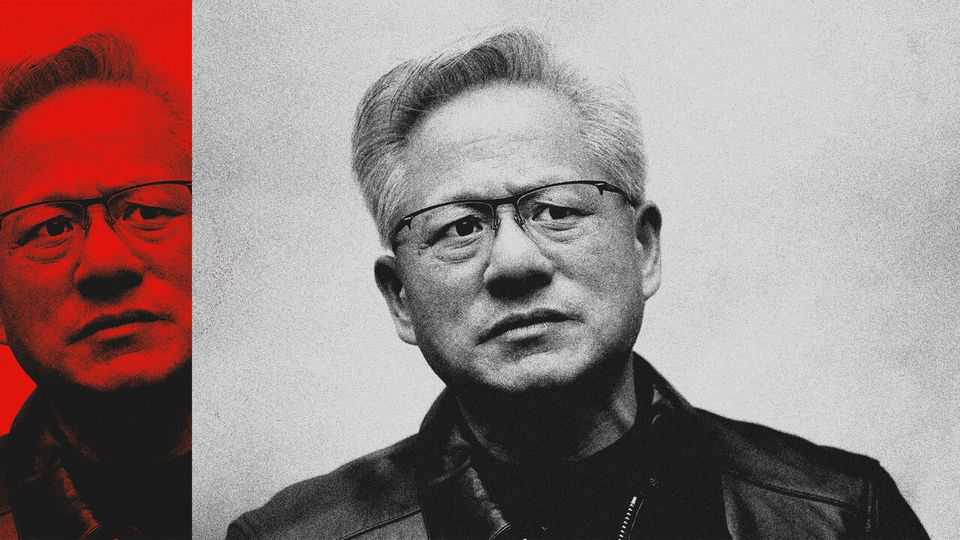

Jensen Huang’s recklessness leaves Nvidia with no good options
His affair will bring lasting damage to the company

Nov 12th 2026
Editor’s note: Jensen Huang resigned on November 12th.
Few companies have looked as unassailable as Nvidia in recent years. Its whizzy chips, together with its software and networking gear, made it indispensable to the artificial-intelligence boom, affording it an outsize share of the profits from the technology. Now Jensen Huang, who co-founded the company and has led it for over three decades, has weakened Nvidia to a degree that no rival could have hoped to achieve. On November 12th, as The Economist went to press, its board was reportedly preparing to oust him.
Mr Huang’s unravelling has been swift. In a short memo on November 8th he confessed to an extramarital affair, apologising to his family and his company. At the same time Nvidia’s board announced it had launched an investigation into whether he had “been the target of a foreign-intelligence effort”. The admission followed reports that he had been romantically involved with Alice Huang (no relation), a Chinese executive at Megaspeed, a Singaporean data-centre company that buys Nvidia’s chips. American officials suspect Megaspeed of smuggling banned chips into China—and believe Ms Huang to be a Chinese agent (a claim rejected by the Chinese government).
Then on November 11th The New York Times reported that Mr Huang also had an affair with an executive who reported directly to him. Nvidia’s share price, which had been down by 7% since Mr Huang’s memo, plunged by a further 9% in after-hours trading after reports his job was in jeopardy. Colette Kress, Nvidia’s finance chief, is widely tipped to step in as interim boss if he goes.
Two questions now loom large. Can Nvidia, until recently the world’s most valuable company, thrive without Mr Huang? And can the AI build-out, which the company has done so much to bankroll, survive the shock?
It may be the affair with a subordinate that seals Mr Huang’s fate, but it was his entanglement with the Megaspeed executive that raises the most troubling questions. Since October 2022 America has barred the sales of its leading-edge chips to China. Yet Chinese firms have found ways round the ban. Some do so by renting computing power in data centres abroad. Others rely on intermediaries in South-East Asia that smuggle chips into China.
Megaspeed, a “neocloud” that rents out access to AI processors, is suspected by American officials of operating across both routes. It took its current name in 2023, the year Ms Huang was listed as its managing director, and soon became one of the biggest buyers of Nvidia’s chips in South-East Asia. Culper Research, a short-seller, estimates that Speedmatrix, Megaspeed’s Malaysian subsidiary, imported $4.6bn-worth of goods between December 2024 and January 2026, most of them servers packed with Nvidia chips. As far back as September 2024 American officials began investigating Megaspeed. (The firm denies the allegations.)
None of this seemed to give Nvidia’s boss pause. He and Ms Huang were repeatedly photographed together, and his company continued to vouch for its customer. Late last year Nvidia said its own checks had found no evidence of diversion. Last month Mr Huang called his dealings with Ms Huang “completely normal and not unusual”, and insisted that Nvidia had “counted every one” of Megaspeed’s chips. In recent days Bloomberg and the New York Times have independently reported that Tim Teter, Nvidia’s general counsel, intervened last year in the Commerce Department’s investigation of Megaspeed. An Nvidia spokesperson says that the company regularly consults export-control officials to share knowledge.
President Donald Trump’s administration seemed no more troubled. Mr Huang has been one of Mr Trump’s favourite businessmen, and a frequent presence at his side. Yet the president appears to have been warned about the relationship at least twice. Reportedly he was briefed on the intelligence about Ms Huang roughly a year ago. In May, as he flew to China with a group of executives, Marco Rubio, the secretary of state, reminded him of it shortly before Nvidia’s boss joined the trip during a refuelling stop in Alaska.
The administration will now have to answer for why it took no action on the warnings, and why it continued to allow Mr Huang to wield so much influence on a matter of national security. Three Republican committee chairmen have summoned Mr Huang to a closed-door congressional briefing on November 18th. Howard Lutnick, the commerce secretary, will also face scrutiny, particularly once Democrats take control of Congress in January. Chris Coons, who is set to chair the Senate Foreign Relations Committee, has promised to investigate “the insane relationship between the Trump administration, Chinese spies and AI billionaires”.
The scandal could also revive a handful of stalled bills to tighten China’s access to AI chips. One would turn into law the administration’s policy of blocking the sale of Nvidia’s most advanced chips to China. Another would require exporters to show that their chips have not been diverted, for instance by verifying where they are.
If Mr Huang goes, it will be a sorry end to a brilliant career. He co-founded Nvidia in 1993 to make graphics chips for video games. But in the mid-2010s Mr Huang became convinced that AI would transform computing, and that Nvidia’s form of chip would provide its essential building blocks. The bet proved prescient. Between the start of 2023 and the beginning of this year Nvidia’s share price rose 13-fold. In October 2025 it became the first company to be worth more than $5trn.
Finding a permanent successor would be hard. Jay Goldberg of Seaport Research Partners, a firm of analysts, reckons that “nobody can fill Jensen’s leather jacket”. Although Nvidia has grown into a giant, with some 40,000 employees, it is run as an extension of its charismatic leader. Mr Huang is a micromanager, with some 60 people reporting directly to him. His ties with suppliers such as TSMC, a Taiwanese chip manufacturer, and SK Hynix, a South Korean memory-maker, have helped secure scarce capacity. Some outsiders have been floated, including Lisa Su, boss of AMD (and a distant relative of Mr Huang). Yet any newcomer would inherit a firm full of the old boss’s loyalists.
Nvidia’s performance may hold up for now. Mr Goldberg notes that many of its chips are sold out into next year, and demand for AI gear remains strong. But the saga looks set to be a lasting distraction, even if Mr Huang is replaced. On November 9th shareholders filed a class-action accusing the company and Mr Huang of misleading investors when they responded to reports about the relationship between him and Ms Huang.
Mr Goldberg also thinks that Mr Huang’s exit would “take a lot of the spirit out of” the investment boom. Nvidia’s boss is one of AI’s loudest cheerleaders; his leather jacket, stadium keynotes and sermons on the technology have made him a rock star among the tech faithful. Lately he has also become the industry’s banker, using Nvidia’s cash to bankroll AI startups and its balance-sheet to guarantee the debts of myriad data-centre projects. With Mr Huang gone, the web of deals he has spun may start to unravel. ■